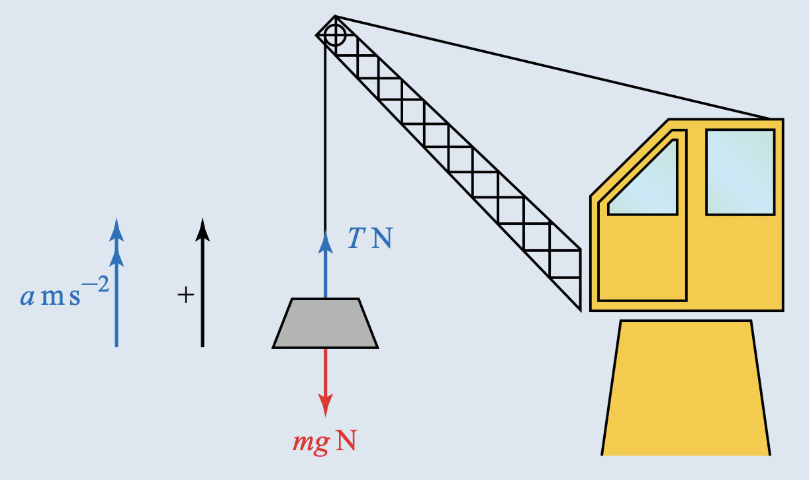
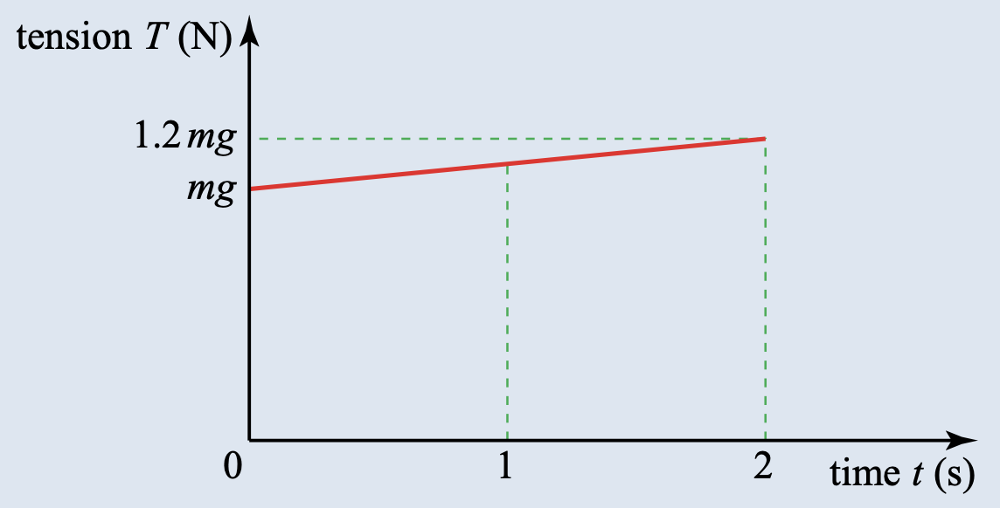
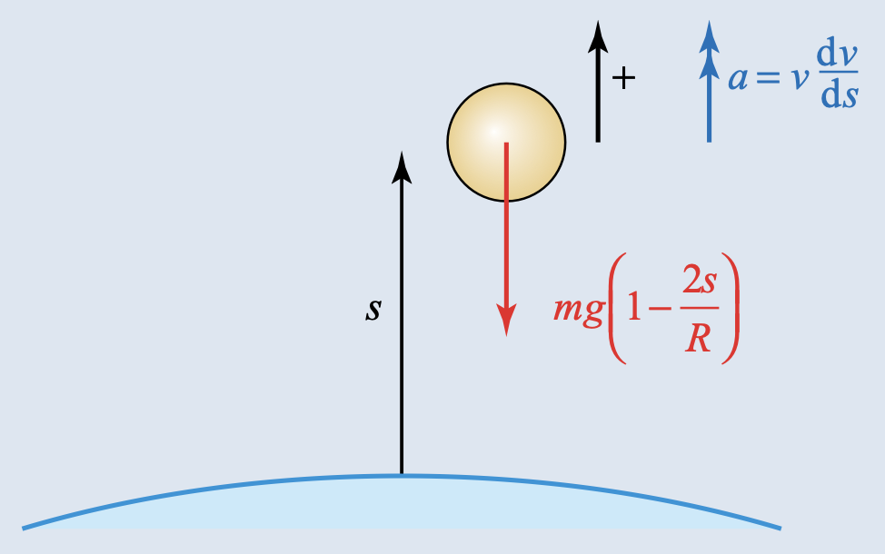

3.6 Linear motion under a variable force
Further Mechanics · differential equations · variable force · resistance
考生需要能够：
- 用 Newton’s second law 建立 variable-force differential equation；
- 根据 force 是 t、x 或 v 的函数选择 a=\frac{dv}{dt} \quad\text{或}\quad a=v\frac{dv}{dx};
- 分离变量并使用初始条件；
- 处理重力、阻力、驱动力和 limiting speed；
- 处理方向改变、上升/下降以及 displacement 和 distance 的区别。
1. 教材知识点
1.1 Newton’s second law as a differential equation
对于质量恒定的粒子， \boxed{F=m\frac{dv}{dt}}.
使用 chain rule： \frac{dv}{dt}=\frac{dv}{dx}\frac{dx}{dt} =v\frac{dv}{dx}, 所以也有 \boxed{F=mv\frac{dv}{dx}}.
1.2 如何选择形式
- 若 force 是 F(t)，通常使用 \dfrac{dv}{dt}，先求 v(t)，再积分求 x(t)。
- 若 force 是 F(x)，通常使用 v\dfrac{dv}{dx}，可直接求 v(x)。
- 若 force 是 F(v)，两种形式都可用：求时间用 \dfrac{dv}{dt}，求位移用 v\dfrac{dv}{dx}。
1.3 Resistance and limiting speed
阻力方向与速度方向相反。若下落时 m\frac{dv}{dt}=mg-cv, 则 limiting speed 满足 mg-cv=0.
1.4 Initial conditions
积分后必须使用题目给出的 t=0、x=0、v=U 等条件确定常数。若只写出含 arbitrary constant 的结果，通常不能得到最后的 numerical answer。
2. Textbook Examples
Example 6.1 - Tension depending on time
A crate of mass m is freely suspended at rest from a crane. When the operator begins to lift the crate further, the tension in the suspending cable increases uniformly from mg newtons to 1.2mg newtons over a period of 2 seconds.
(i) What is the tension in the cable t seconds after the lifting has begun, for t\leq 2?
(ii) What is the velocity after 2 seconds?
(iii) How far has the crate risen after 2 seconds?
Assume the situation may be modelled with air resistance and cable stretching ignored.


Show answer
(i)
- T=mg+0.1mgt.
(ii)
- Taking upwards as positive, m\frac{dv}{dt}=T-mg=0.1mgt.
- Using v=0 at t=0 gives v=0.05gt^2.
- Therefore \boxed{v=2\ \mathrm{m\,s^{-1}}} when t=2 and g=10.
(iii)
- Since ds/dt=v, s=0.05g\frac{t^3}{3}.
- Therefore \boxed{s=\frac43\ \mathrm m}.
Example 6.2 - Gravitational force depending on displacement
A prototype projectile of mass m is launched vertically upwards from the Earth’s surface, but only just reaches a height of one tenth of the Earth’s radius. When the height s above the surface is small compared with the radius R of the Earth, the magnitude of the Earth’s gravitational force on the projectile may be modelled as mg\left(1-\frac{2s}{R}\right).
(i) Write down a differential equation of motion involving s and velocity v.
(ii) Integrate this equation and obtain an expression for the loss of kinetic energy between launch and height s.
(iii) Show that the launch velocity is 0.3\sqrt{2gR}.

Show answer
(i)
- Taking upwards as positive, mv\frac{dv}{ds}=-mg\left(1-\frac{2s}{R}\right).
(ii)
- Integrating gives \frac12mv_0^2-\frac12mv^2=mgs-\frac{mgs^2}{R}.
(iii)
- At s=R/10, v=0.
- Hence \frac12mv_0^2=\frac{9}{100}mgR and \boxed{v_0=0.3\sqrt{2gR}}.
Example 6.3 - Force depending on velocity
A body of mass 2 kg, initially at rest on a smooth horizontal plane, is subjected to a horizontal force of magnitude \dfrac{1}{2v+1} N, where v\geq 0 is the velocity of the body.
(i) Find the time at which the velocity is 1\ \mathrm{m\,s^{-1}}.
(ii) Find the displacement when the velocity is 1\ \mathrm{m\,s^{-1}}.
Show answer
(i)
- 1=2(2v+1)\dfrac{dv}{dt}.
- With t=0 at v=0, t=2v^2+2v.
- Hence \boxed{t=4\ \mathrm s}.
(ii)
- 1=2v(2v+1)\dfrac{dv}{ds}.
- With s=0 at v=0, s=\frac43v^3+v^2.
- Hence \boxed{s=\frac73\ \mathrm m}.
3. 教材中标注 Cambridge International 的题目
本节保留 Exercise 6A 中标注 Cambridge International 的英文题干，所有小问均分开列出，答案使用 Show answer。
Cambridge International textbook exercises
The following questions are reproduced from Exercise 6A. The original English wording and every sub-part are retained.
Exercise 6A Question 4 - Cambridge International 9709 Paper 53, November 2015
A particle P of mass 0.5 kg is projected vertically upwards from a point on a horizontal surface. A resisting force of magnitude 0.02v^2 N acts on P, where v\ \mathrm{m\,s^{-1}} is the upward velocity of P when it is at a height of x m above the surface. The initial speed of P is 8\ \mathrm{m\,s^{-1}}.
(i) Show that, while P is moving upwards, v\frac{dv}{dx}=-10-0.04v^2.
(ii) Find the greatest height of P above the surface.
(iii) Find the speed of $P immediately before it strikes the surface after descending.
Show answer
(i) 0.5v\,dv/dx=-5-0.02v^2, hence \boxed{v\,dv/dx=-10-0.04v^2}.
(ii) At the greatest height v=0; integration gives \boxed{x=2.85\ \mathrm m}.
(iii) Applying the descent equation from the greatest height to the surface gives \boxed{v=7.14\ \mathrm{m\,s^{-1}}}.Exercise 6A Question 5 - Cambridge International 9709 Paper 5, June 2006
An object of mass 0.4 kg is projected vertically upwards from the ground, with an initial speed of 16\ \mathrm{m\,s^{-1}}. A resisting force of magnitude 0.1v N acts on the object during its ascent, where v\ \mathrm{m\,s^{-1}} is the speed of the object at time t s after it starts to move.
(i) Show that \dfrac{dv}{dt}=-0.25(v+40).
(ii) Find the value of t at the instant that the object reaches its maximum height.
Show answer
- 0.4\,dv/dt=-4-0.1v, so the required equation follows.
- v=56e^{-0.25t}-40; setting v=0 gives \boxed{t=4\ln(7/5)=1.35\ \mathrm s}.
Exercise 6A Question 6 - Cambridge International 9709 Paper 5, June 2008
A particle P of mass 0.5 kg moves on a horizontal surface along the straight line OA, in the direction from O to A. The coefficient of friction between P and the surface is 0.08. Air resistance of magnitude 0.2v N opposes the motion, where v\ \mathrm{m\,s^{-1}} is the speed of P at time t s. The particle passes through O with speed 4\ \mathrm{m\,s^{-1}} when t=0.
(i) Show that 2.5\dfrac{dv}{dt}=-(v+2) and hence find the value of t when v=0.
(ii) Show that \dfrac{dx}{dt}=6e^{-0.4t}-2, where x m is the displacement of P from O at time t s, and hence find the distance OP when v=0.
Show answer
- v=6e^{-0.4t}-2.
- Hence \boxed{t=2.75\ \mathrm s} when v=0.
- x=15(1-e^{-0.4t})-2t, so \boxed{OP=4.51\ \mathrm m}.
Exercise 6A Question 7 - Cambridge International 9709 Paper 5, June 2009
A particle P starts from a fixed point O and moves in a straight line. When the displacement of P from O is x m, its velocity is v\ \mathrm{m\,s^{-1}} and its acceleration is \dfrac{1}{x+2}\ \mathrm{m\,s^{-2}}. Given that v=2 when x=0, use integration to show that v^2=2\ln\left(\frac{x}{2}+1\right)+4.
Find the value of v when the acceleration of P is \frac14\ \mathrm{m\,s^{-2}}.
Show answer
- v\,dv/dx=1/(x+2) gives the stated expression.
- a=1/4 gives x=2.
- Therefore \boxed{v=\sqrt{4+2\ln2}=2.32\ \mathrm{m\,s^{-1}}}.
Exercise 6A Question 8 - Cambridge International 9709 Paper 51, June 2012
A particle of mass 0.4 kg is released from rest at the top of a smooth plane inclined at 30^\circ to the horizontal. The motion of P down the slope is opposed by a force of magnitude 0.6x N, where x m is the distance P has travelled down the slope. P comes to rest before reaching the foot of the slope. Calculate
(i) the greatest speed of P during its motion;
(ii) the distance travelled by P during its motion.
Show answer
- 0.4v\,dv/dx=2-0.6x.
- The greatest speed occurs at x=10/3, giving \boxed{v_{\max}=4.08\ \mathrm{m\,s^{-1}}}.
- At the final rest point, integration gives \boxed{x=6.67\ \mathrm m}.
Exercise 6A Question 9 - Cambridge International 9709 Paper 52, June 2013
A particle P of mass 0.5 kg moves in a straight line on a smooth horizontal surface. The velocity of P is v\ \mathrm{m\,s^{-1}} when the displacement of P from O is x m. A single horizontal force of magnitude 0.16e^x N acts on P in the direction OP. The velocity of P when it is at O is 0.8\ \mathrm{m\,s^{-1}}.
(i) Show that v=0.8e^{x/2}.
(ii) Find the time taken by P to travel 1.4 m from O.
Show answer
- 0.5v\,dv/dx=0.16e^x gives v=0.8e^{x/2}.
- t=\int_0^{1.4}1/v\,dx=2.5(1-e^{-0.7}), so \boxed{t=1.26\ \mathrm s}.
Exercise 6A Question 10 - Cambridge International 9709 Paper 53, June 2015
A cyclist and her bicycle have a total mass of 60 kg. The cyclist rides in a horizontal straight line, and exerts a constant force in the direction of motion of 150 N. The motion is opposed by a resistance of magnitude 12v N, where v\ \mathrm{m\,s^{-1}} is the cyclist’s speed at time t s after passing through a fixed point A.
(i) Show that 5\dfrac{dv}{dt}=12.5-v.
(ii) Given that the cyclist passes through A with speed 11.5\ \mathrm{m\,s^{-1}}, solve this differential equation to show that v=12.5-e^{-0.2t}.
(iii) Express the displacement of the cyclist from A in terms of t.
Show answer
- 60\,dv/dt=150-12v, hence the equation in (i).
- The solution is v=12.5-e^{-0.2t}.
- Therefore \boxed{x=12.5t+5e^{-0.2t}-5}.
Exercise 6A Question 11 - Cambridge International 9709 Paper 52, November 2009
A particle P of mass 0.3 kg is projected vertically upwards from the ground with an initial speed of 20\ \mathrm{m\,s^{-1}}. When P is at height x m above the ground, its upward speed is v\ \mathrm{m\,s^{-1}}. It is given that 3v-90\ln(v+30)+x=A, where A is a constant.
(i) Differentiate this equation with respect to x and hence show that the acceleration of the particle is -\frac13(v+30)\ \mathrm{m\,s^{-2}}.
(ii) Find, in terms of v, the resisting force acting on the particle.
(iii) Find the time taken for P to reach its maximum height.
Show answer
- Differentiating gives \boxed{a=-\frac13(v+30)}.
- Comparing 0.3a=-3-0.1v gives resisting force \boxed{0.1v\ \mathrm N}.
- Setting v=0 in the time solution gives \boxed{t=3\ln(5/3)=1.53\ \mathrm s}.
Exercise 6A Question 12 - Cambridge International 9709, June 2010
A particle P of mass 0.25 kg moves in a straight line on a smooth horizontal surface. P starts at the point O with speed 10\ \mathrm{m\,s^{-1}} and moves towards a fixed point A on the line. At time t s the displacement of P from O is x m and the velocity of P is v\ \mathrm{m\,s^{-1}}. A resistive force of magnitude (5-x) N acts on P in the direction towards O.
(i) Form a differential equation in v and x. By solving this differential equation, show that v=10-2x.
(ii) Find x in terms of t, and hence show that the particle is always less than 5 m from O.
Show answer
- 0.25v\,dv/dx=-(5-x) gives v=10-2x.
- Solving dx/dt=10-2x gives \boxed{x=5(1-e^{-2t})<5}.
4. Paper 3 真题题库
本节收录 2021-2025 Paper 3 中与 variable force、resistance、driving force、limiting speed 和 differential equations 直接相关的全部真题组。题目按 examination session 和 question number 排列，答案按 Mark Scheme 分点书写。
Paper 3 true-paper questions
Questions are arranged by examination session and question number. The original English wording, all sub-parts and component references are retained. Answers are written as mark-scheme points.
2021 May/June · 9231/31 and 9231/32 · Question 1
A particle P of mass 1 kg is moving along a straight line against a resistive force of magnitude \dfrac{10v}{(t+1)^2} N, where v\ \mathrm{m\,s^{-1}} is the speed of P at time t s. When t=0, v=25.
Find an expression for v in terms of t.
Show answer
- Taking the direction of motion as positive, \frac{dv}{dt}=-\frac{10v}{(t+1)^2}.
- Separating and integrating, \ln v=\frac{10}{t+1}+C.
- Using v=25 when t=0 gives C=\ln25-10.
- Therefore \boxed{v=25e^{\,10/(t+1)-10}}.
2021 May/June · 9231/33 · Question 5
A particle P of mass m kg is projected vertically upwards from a point O, with speed 20\ \mathrm{m\,s^{-1}}, and moves under gravity. There is a resistive force of magnitude 2mv N, where v\ \mathrm{m\,s^{-1}} is the speed of P at time t s after projection.
(a) Find an expression for v in terms of t, while P is moving upwards.
The displacement of P from O is x m at time t s.
(b) Find an expression for x in terms of t, while P is moving upwards.
(c) Find, correct to 3 significant figures, the greatest height above O reached by P.
Show answer
(a)
- Taking upwards as positive and using g=10, \frac{dv}{dt}=-10-2v.
- With v(0)=20, \boxed{v=25e^{-2t}-5}.
(b)
- Since dx/dt=v and x(0)=0, \boxed{x=\frac{25}{2}(1-e^{-2t})-5t}.
(c)
- At maximum height, v=0, so t=\frac12\ln5.
- Substitution gives \boxed{x=10-\frac52\ln5=5.98\ \mathrm m}.
2021 October/November · 9231/31 · Question 2
A particle P of mass m kg moves along a horizontal straight line with acceleration a\ \mathrm{m\,s^{-2}} given by a=\frac{v(1-2t^2)}{t}, where v\ \mathrm{m\,s^{-1}} is the velocity of P at time t s.
(a) Find an expression for v in terms of t and an arbitrary constant.
(b) Given that a=5 when t=1, find an expression, in terms of m and t, for the horizontal force acting on P at time t.
Show answer
(a)
- Since a=dv/dt, \frac1v\frac{dv}{dt}=\frac1t-2t.
- Therefore \boxed{v=At e^{-t^2}}, where A is arbitrary.
(b)
- When t=1, 5=v(1-2)=-v, so v=-5.
- Hence A=-5e and v=-5et e^{-t^2}.
- Therefore \boxed{F=ma=5me^{\,1-t^2}(2t^2-1)}.
2021 October/November · 9231/32 · Question 6
A particle P of mass 2 kg moves along a horizontal straight line. The point O is a fixed point on this line. At time t s the velocity of P is v\ \mathrm{m\,s^{-1}} and the displacement of P from O is x m.
A force of magnitude \left(8x-\dfrac{128}{x^3}\right) N acts on P in the direction OP. When t=0, x=8 and v=-15.
(a) Show that v=-\frac{2}{x}(x^2-4).
(b) Find an expression for x in terms of t.
Show answer
(a)
- Use 2v\,dv/dx=8x-\dfrac{128}{x^3}.
- Integrating and using x=8, v=-15 gives v^2=4\frac{(x^2-4)^2}{x^2}.
- The sign is negative initially, so \boxed{v=-\dfrac{2}{x}(x^2-4)}.
(b)
- Since dx/dt=-2(x^2-4)/x, \frac{x\,dx}{x^2-4}=-2\,dt.
- Using x=8 at t=0 gives x^2-4=60e^{-4t}.
- Therefore \boxed{x=2\sqrt{1+15e^{-4t}}}.
2022 May/June · 9231/31 and 9231/32 · Question 3
A particle P is moving in a horizontal straight line. Initially P is at the point O on the line and is moving with velocity 25\ \mathrm{m\,s^{-1}}. At time t s after passing through O, the acceleration of P is \dfrac{4000}{(5t+4)^3}\ \mathrm{m\,s^{-2}} in the direction PO. The displacement of P from O at time t is x m.
Find an expression for x in terms of t.
Show answer
- Taking the direction OP as positive, \frac{dv}{dt}=-\frac{4000}{(5t+4)^3}.
- Using v(0)=25 gives v=\frac{400}{(5t+4)^2}.
- Since dx/dt=v and x(0)=0, \boxed{x=20-\frac{80}{5t+4}}.
2022 May/June · 9231/33 · Question 5
A particle P of mass 4 kg is moving in a horizontal straight line. At time t s the velocity of P is v\ \mathrm{m\,s^{-1}} and the displacement of P from a fixed point O on the line is x m. The only force acting on P is a resistive force of magnitude (4e^{-x}+12)e^{-x} N. When t=0, x=0 and v=4.
(a) Show by integration that v=\frac{1+3e^x}{e^x}.
(b) Find an expression for x in terms of t.
Show answer
(a)
- The equation of motion is 4v\frac{dv}{dx}=-(4e^{-x}+12)e^{-x}.
- Integrating and using v=4 at x=0 gives v^2=(3+e^{-x})^2.
- Since v>0, \boxed{v=3+e^{-x}=\dfrac{1+3e^x}{e^x}}.
(b)
- dx/dt=3+e^{-x}.
- Let y=e^x. Then dy/dt=3y+1, y(0)=1.
- Hence y=(4e^{3t}-1)/3 and \boxed{x=\ln\left(\frac{4e^{3t}-1}{3}\right)}.
2022 October/November · 9231/31 and 9231/33 · Question 4
A particle of mass 0.5 kg moves along a horizontal straight line. Its velocity is v\ \mathrm{m\,s^{-1}} at time t s. The forces acting on the particle are a driving force of magnitude 50 N and a resistance of magnitude 2v^2 N. The initial velocity of the particle is 3\ \mathrm{m\,s^{-1}}.
(a) Find an expression for v in terms of t.
(b) Deduce the limiting value of v.
Show answer
(a)
- 0.5\,dv/dt=50-2v^2, so \frac{dv}{dt}=4(25-v^2).
- Separating and using v(0)=3 gives \frac{5+v}{5-v}=4e^{40t}.
- Therefore \boxed{v=5\frac{4e^{40t}-1}{4e^{40t}+1}}.
2022 October/November · 9231/32 · Question 4
A particle P of mass 5 kg moves along a horizontal straight line. At time t s, the velocity of P is v\ \mathrm{m\,s^{-1}} and its displacement from a fixed point O on the line is x m. The forces acting on P are a force of magnitude \dfrac{500}{v} N in the direction OP and a resistive force of magnitude 12v^2 N. When t=0, x=0 and v=5.
(a) Find an expression for v in terms of x.
(b) State the value that the speed approaches for large values of x.
Show answer
(a)
- Using 5v\,dv/dx=500/v-12v^2 and setting y=v^3 gives \frac{dy}{dx}+\frac{36}{5}y=300.
- With y(0)=125, y=\frac{125}{3}\left(1+2e^{-36x/5}\right).
- Therefore \boxed{v=5\left(\frac{1+2e^{-36x/5}}{3}\right)^{1/3}}.
2023 May/June · 9231/31 and 9231/32 · Question 6
A particle P moving in a straight line has displacement x m from a fixed point O on the line and velocity v\ \mathrm{m\,s^{-1}} at time t s. The acceleration of P, in \mathrm{m\,s^{-2}}, is given by 6v\sqrt{v+9}. When t=0, x=2 and v=72.
(a) Find an expression for v in terms of x.
(b) Find an expression for x in terms of t.
Show answer
(a)
- Use v\,dv/dx=6v\sqrt{v+9}, so dv/dx=6\sqrt{v+9}.
- Integration gives 2\sqrt{v+9}=6x+C.
- Using x=2, v=72 gives C=6.
- Hence \boxed{v=9(x+1)^2-9}.
(b)
- Since dx/dt=9x(x+2), \frac{dx}{x(x+2)}=9\,dt.
- Using x=2 at t=0 gives \boxed{x=\frac{2e^{18t}}{2-e^{18t}}}.
2023 May/June · 9231/33 · Question 6
A particle of mass m kg falls vertically under gravity, from rest. At time t s, P has fallen x m and has velocity v\ \mathrm{m\,s^{-1}}. The only forces acting on P are its weight and a resistance of magnitude kmgv N, where k is a constant.
(a) Find an expression for v in terms of t, g and k.
Show answer
- Taking downwards as positive, \frac{dv}{dt}=g(1-kv).
- Using v(0)=0 gives \boxed{v=\frac1k(1-e^{-kgt})}.
2023 October/November · 9231/31 and 9231/33 · Question 2
A ball of mass 2 kg is projected vertically downwards with speed 5\ \mathrm{m\,s^{-1}} through a liquid. At time t s after projection, the velocity of the ball is v\ \mathrm{m\,s^{-1}} and its displacement from its starting point is x m. The forces acting on the ball are its weight and a resistive force of magnitude 0.2v^2 N.
(a) Find an expression for v in terms of t.
(b) Deduce what happens to v for large values of t.
Show answer
(a)
- Taking downwards as positive, 2\frac{dv}{dt}=20-0.2v^2.
- Using v(0)=5, \boxed{v=10\frac{3e^{2t}-1}{3e^{2t}+1}}.
2023 October/November · 9231/32 · Question 2
A particle P of mass 0.5 kg moves in a straight line. At time t s the velocity of P is v\ \mathrm{m\,s^{-1}} and its displacement from a fixed point O on the line is x m. The only forces acting on P are a force of magnitude \dfrac{150}{(x+1)^2} N in the direction of increasing displacement and a resistive force of magnitude \dfrac{450}{(x+1)^3} N. When t=0, x=0 and v=20.
Find v in terms of x, giving your answer in the form v=\dfrac{Ax+B}{x+1}, where A and B are constants to be determined.
Show answer
- Using 0.5v\,dv/dx=\dfrac{150}{(x+1)^2}-\dfrac{450}{(x+1)^3} and integrating gives v^2=\left(\frac{30}{x+1}-10\right)^2.
- Since v=20 at x=0, \boxed{v=\frac{-10x+20}{x+1}}.
- Thus \boxed{A=-10,\ B=20}.
2024 May/June · 9231/31 and 9231/32 · Question 6
A particle P of mass 2 kg moving on a horizontal straight line has displacement x m from a fixed point O on the line and velocity v\ \mathrm{m\,s^{-1}} at time t s. The only horizontal force acting on P has magnitude \frac1{10}(2v^2-1)e^{-t} N and acts towards O. When t=0, x=1 and v=3.
(a) Find an expression for v in terms of t.
(b) Find an expression for x in terms of t.
Show answer
(a)
- The equation of motion is \frac{dv}{dt}=-\frac1{20}(2v^2-1)e^{-t}.
- Separation and the condition v(0)=3 give \boxed{v=\frac12+\frac{5e^t}{3e^t-1}}.
(b)
- Integrating dx/dt=v and using x(0)=1 gives \boxed{x=\frac12t+\frac53\ln(3e^t-1)+1-\frac53\ln2}.
2024 May/June · 9231/33 · Question 7
A parachutist of mass m kg opens his parachute when he is moving vertically downwards with a speed of 50\ \mathrm{m\,s^{-1}}. At time t s after opening his parachute, he has fallen a distance x m from the point where he opened his parachute, and his speed is v\ \mathrm{m\,s^{-1}}. The forces acting on him are his weight and a resistive force of magnitude mv N.
(a) Find an expression for v in terms of t.
(b) Find an expression for x in terms of t.
(c) Find the distance that the parachutist has fallen, since opening his parachute, when his speed is 15\ \mathrm{m\,s^{-1}}.
Show answer
(a) Taking downwards as positive, dv/dt=10-v and v(0)=50, so \boxed{v=10+40e^{-t}}.
(b) Since dx/dt=v and x(0)=0, \boxed{x=10t+40(1-e^{-t})}.
(c) When v=15, e^{-t}=1/8, so t=\ln8 and \boxed{x=35+10\ln8=55.8\ \mathrm m}.2024 October/November · 9231/31 and 9231/33 · Question 5
A particle P of mass 2 kg moving on a horizontal straight line has displacement x m from a fixed point O on the line and velocity v\ \mathrm{m\,s^{-1}} at time t s. The only horizontal force acting on P is a variable force F N which can be expressed as a function of t. It is given that \frac{v}{x}=\frac{3-t}{1+t} and when t=0, x=5.
(a) Find an expression for x in terms of t.
(b) Find the magnitude of F when t=3.
Show answer
(a)
- Since dx/dt=v, \frac1x\frac{dx}{dt}=\frac{3-t}{1+t}=-1+\frac4{1+t}.
- Using x(0)=5 gives \boxed{x=5(1+t)^4e^{-t}}.
(b)
- At t=3, v=0 and dv/dt=x\,d[(3-t)/(1+t)]/dt=-x/4.
- Hence |F|=2|dv/dt|=x/2=640e^{-3}.
- Therefore \boxed{|F|=31.9\ \mathrm N}.
2024 October/November · 9231/32 · Question 7
A particle P of mass m kg is held at rest at a point O and released so that it moves vertically under gravity against a resistive force of magnitude 0.1mv^2 N, where v\ \mathrm{m\,s^{-1}} is the velocity of P at time t s.
(a) Find an expression for v in terms of t.
(b) Find an expression for v^2 in terms of x, where x is the displacement of P from O.
Show answer
(a) Taking downwards as positive and using g=10, \frac{dv}{dt}=10-v^2/10. Thus \boxed{v=10\tanh t}.
(b) Using v\,dv/dx=10-v^2/10 gives \boxed{v^2=100(1-e^{-x/5})}.2025 May/June · 9231/31 and 9231/32 · Question 1
A particle P of mass 8 kg is moving in a straight horizontal line. At time t s, P has displacement x m from a fixed point O on the line and velocity v\ \mathrm{m\,s^{-1}}. The only horizontal force acting on P has magnitude (x^3+4x) N and acts in the direction OP. When t=0, x=0 and v=1.
(a) Find an expression for v in terms of x, giving your answer in the form v=ax^2+b, where a and b are constants to be determined.
(b) Find an expression for x in terms of t.
Show answer
(a)
- 8v\,dv/dx=x^3+4x.
- Using v=1 when x=0, v^2=\left(\frac{x^2}{4}+1\right)^2.
- Since v>0, \boxed{v=\frac14x^2+1}, so a=\frac14 and b=1.
(b)
- dx/dt=1+x^2/4, x(0)=0.
- Therefore \boxed{x=2\tan(t/2)}.
2025 May/June · 9231/33 · Question 3
A ball of mass m kg is projected vertically upwards with initial speed U\ \mathrm{m\,s^{-1}} and moves under gravity. At time t s after projection, the ball has travelled a distance x m and its speed is v\ \mathrm{m\,s^{-1}}. There is a resistive force of magnitude mkv^2 N, where k is a positive constant.
(a) Show that the distance travelled by the ball when it is moving upwards is x=\frac{1}{2k}\ln\left(\frac{g+kU^2}{g+kv^2}\right).
(b) Find the time taken for the ball to reach its maximum height.
Show answer
(a)
- Taking upwards as positive, v\frac{dv}{dx}=-g-kv^2.
- Separating and integrating from v=U at x=0 gives the stated result.
(b)
- At maximum height, v=0.
- From dv/dt=-g-kv^2, t=\int_0^U\frac{dv}{g+kv^2} =\boxed{\frac1{\sqrt{gk}}\tan^{-1}\left(U\sqrt{\frac{k}{g}}\right)}.
2025 October/November · 9231/31 and 9231/33 · Question 3
A particle P is moving in a straight horizontal line. At time t s, the displacement of $P from a fixed point O on the line is x m and the velocity of P is v\ \mathrm{m\,s^{-1}}. The acceleration of P is \frac12(v^2+4)\ \mathrm{m\,s^{-2}} in the direction PO. Initially P is at O and is moving with velocity 2\ \mathrm{m\,s^{-1}}.
(a) Find an expression for x in terms of t.
(b) Find the time when P next goes through O.
Show answer
(a)
- Taking OP as positive, dv/dt=-\frac12(v^2+4).
- Solving with v(0)=2 gives v=2\tan(\frac\pi4-t).
- Integrating dx/dt=v and using x(0)=0 gives \boxed{x=2\ln\left(\cos\left(\frac\pi4-t\right)\right)+\ln2}.
2025 October/November · 9231/32 · Question 7
A particle P of mass m kg moving along a rough horizontal table has displacement x m from a fixed point O on the table and velocity v\ \mathrm{m\,s^{-1}} at time t s. The particle P is subject to a resistive force of magnitude mgkv N, where k is a positive constant, and a frictional force of magnitude nmg. The particle P is initially at O with speed U\ \mathrm{m\,s^{-1}}.
(a) Show that t=\frac1{gk}\ln\left(\frac{kU+n}{kv+n}\right).
(b) Find the distance P moves before coming to rest.
(c) Find the average speed of P over the period it is moving.
Show answer
(a) Taking the direction of motion as positive, \frac{dv}{dt}=-g(kv+n). Separating and using v=U at t=0 gives the stated formula.
(b) Let L be the stopping distance. Since dt=-dv/[g(kv+n)], \boxed{L=\frac{1}{gk^2}\left[kU-n\ln\left(\frac{kU+n}{n}\right)\right]}.
(c) The stopping time is T=\frac1{gk}\ln\left(\frac{kU+n}{n}\right). Therefore \boxed{\bar v=\frac{L}{T} =\frac{U}{\ln((kU+n)/n)}-\frac{n}{k}}.5. 本章检查清单
- 先确定 positive direction；
- 阻力方向始终与 velocity 相反；
- F(t) 用 m\,dv/dt；
- F(x) 常用 mv\,dv/dx；
- F(v) 根据题目要求选择时间形式或位移形式；
- 重新积分后要代入初始条件；
- limiting speed 要令 acceleration 为 zero；
- 不要把 variable acceleration 当作 constant acceleration 使用。